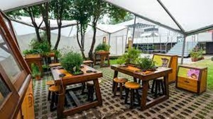
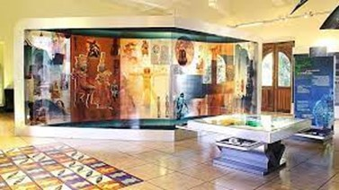

Planta Baja
- Dentro de este espacio, los niños pueden interactuar con la ciencia a través de la luz, ondas, sonido, movimiento, secuencias, clasificación, seriación, percepción, colores, conservación, hábitat y motricidad. A su vez, los niños también
conviven entre ellos, el rango de edad para esta sala es de los 0 a los 6 años. La importancia de esta sala radica en que desde una edad temprana se pueden crear vínculos importantes que estimulen el interés por la ciencia y el
conocimiento. Esta sala cuenta con lo siguiente:
- - Materiales que los niños pueden explorar
- - Área de lectura y lógica-matemática
- - Zona de simulación de la adultez
- - Huerto y selva artificial
- - Zona de exploración motriz
Sala Espacio infantil
- Esta zona es una representación de lo tan inmenso que es el universo, cuenta con representaciones de especies marinas, ecosistemas marinos y contaminación del océano. Esta sala pretende mostrar la importancia que tienen los océanos respecto a los humanos, así como el de invitar al público a reflexionar acerca de cómo es que se está contaminación está afectando a dichos ecosistemas marinos. Cabe resaltar que para entrar esta entrada se cobra un costo adicional de $15 MX.
Sala del océano: inmensidad desconocida
- Este es un planetario dirigido a personas mayores de 6 años. Realiza proyecciones del espacio y cuenta con los siguientes eventos principales. La noche de hoy: es una proyección al cielo nocturno del día que se visite. Las noches del mes: se hace una proyección de un recorrido del mes en el que se acuda a dicho planetario. Películas: relacionados con temáticas del espacio. Cabe resaltar que la entrada tiene un costo extra de $10 MX.
Sala del Planetario José de la Herrán

- Esta sala lo único que pretende transmitir a los visitantes es la importancia de construir viviendas sustentables y de una sana convivencia entre las plantas e insectos respecto a los humanos. También muestra cómo utilizar tecnologías
que permitan utilizar correctamente los recursos naturales renovables. Cuenta con las siguientes secciones:
- Casa UNAM: Es un prototipo de una casa desarrollado por estudiantes y profesores, que muestra la reducción de costos en cuanto a su construcción y cómo se pueden aprovechar todos los recursos renovables existentes.
- Mariposario: lugar donde se crían mariposas en peligro de extinción y donde se muestra información relevante de ellas.
- Plantas medicinales: es una colección de plantas medicinales que existen en el país.
- Huerto urbano: Aquí se conoce el ciclo de vida de las plantas actuales.
Sala Jardín Universum
Piso 1
- Esta es una sala que muestra distintos temas matemáticos relacionados con el arte de una manera sencilla y muy visual. Dentro de toda la sala se pueden encontrar obras que son matemáticas, interactivas y artísticas. Se encuentran las
siguientes obras:
- Poliedros
- Caleidoscopios
- Mosaicos
- Topologías
- Algebraicas
- Cónicas
- Numéricas
Sala del Imaginario matemático
- Esta parte del museo muestra la gran importancia que tiene el cerebro y cómo es que este funciona y activa la parte física y emocional de nuestro cuerpo. Esta sala cuenta con las siguientes secciones:
- Sistema nervioso central: es una maqueta 3D que se enfoca en el estudio de las neuronas y el sistema nervioso central.
- Corteza cerebral y homúnculos: se explica la importancia del cerebro en la motricidad
- Cabina del lenguaje: explica cómo es que comprendemos y producimos el lenguaje
- Campo visual: muestra cómo percibimos visualmente al mundo gracias al cerebro
- Enfermedades neurodegenerativas: enseña el desarrollo de las enfermedades neurológicas
Sala del Cerebro
- Esta sala desea transmitir la importancia de la química en la actualidad y por qué es necesario tener conocimientos básicos de esta, para que así podamos tomar decesiones cotidianas que nos ayuden en la solución de ciertos problemas.
También muestran algunos experimentos químicos. La sala tiene las siguientes áreas químicas:
- Baño
- Botiquín
- Recamara
- Cocina
- Su estudio
- Jardín
Sala del Química
Piso 2
- Es una sala muy interesante que muestra cómo se formó el universo, los elementos que lo conforman y su constante dinamicidad. La sala muestra exposiciones principalmente de los siguientes temas:
- Sistema solar
- Estrellas
- Galaxia
- Instrumentos del astrónomo
Sala del Universo

- Es una zona que muestra la biodiversidad de todas las especies existentes, su origen, evolución, mutaciones y extinción. Las exposiciones a las que se les da mayor importancia son las siguientes:
- Darwin y las evidencias
- Aspectos históricos de la evolución
- Evidencias de la evolución
- Todos estos temas son presentados mediante charlas, talleres y demostraciones interactivas.
Sala de la evolución, vida y tiempo
- La parte de la salud muestre qué es el bienestar social, emocional y físico, así como las acciones, emociones y sensaciones para tener un cuerpo integral sano. Las principales temáticas que se abordan en esta sala son:
- Mente sana en cuerpo sano: más allá de la salud física se debe estar bien mentalmente.
- Alimentación: interacción con otras personas para comprender la importancia de la nutrición.
- El cuerpo en movimiento: aquí se muestran todos los beneficios del ejercicio.
- Sobrepeso y obesidad: de igual forma se interactúa con las personas para ver cómo es que la nutrición provoca enfermedades
Sala de la Salud
Eventos y Exposiciones
| FUNCIONES Y EVENTOS | |
| EVENTO O FUNCIONES | HORARIO |
| Arqueoastronomía Maya La antigua civilización maya gustaba de observar con detenimiento su entorno y mirar hacia el cielo para descubrir y explicarse el origen y el fin del Universo, así como el de su civilización y el propósito del tiempo. |
|
| Explorando el Sistema Solar Este viaje te permitirá pasear por la superficie de Ceres o descender por la densa atmósfera de Venus para conocer sus volcanes, así como observar tu propia galaxia, la Vía Láctea. |
|
| Colisiones Cósmicas Este asombroso viaje espacial te permitirá conocer los diferentes encuentros que guardan los astros entre sí y su relación con nosotros. |
|
| De la Tierra al Universo Por medio de este breve relato, podremos reconocer las diferentes etapas en la historia de la astronomía occidental; se recuerda a los griegos y sus primeras observaciones en la Antigüedad. |
|
| La noche de hoy a través de un pequeño viaje en el tiempo podrás curiosear hasta altas horas de la noche para que tú mismo identifiques los planetas que puedes observar a simple vista. |
|
| La noche del mes Si tu objetivo es prepararte para la próxima lluvia de estrellas o estar al tanto de las mejores coincidencias cósmicas a observar, ésta es la mejor opción. |
|
| Arqueoastronomía Mexica: entre el espacio y el tiempo "Arqueoastronomía Mexica: entre el espacio y el tiempo" ilustra el importante papel que jugó la observación astronómica para la evolución de las culturas prehispánicas del centro de México. |
|
| 3,2,1 ¡Despegue! Laura Estrella es una pequeña niña Chilena quien en un sueño recorre el Universo, donde experimenta y comprende interesantes fenómenos como la fuerza de gravedad, la velocidad de la luz, los movimientos de rotación y traslación así como la generación de la energía del Sol. |
|